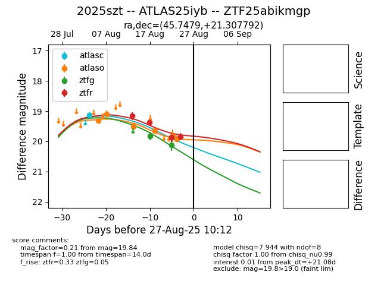

Target 2025szt at 2025-08-26 10:22, see:
FINK: fink-portal.org/ZTF25abikmgp
Lasair: lasair-ztf.lsst.ac.uk/objects/ZTF25abikmgp
ALeRCE: alerce.online/object/ZTF25abikmgp
TNS: wis-tns.org/object/2025szt
YSE: ziggy.ucolick.org/yse/transient_detail/2025szt
alt names
ZTF25abikmgp (ztf,fink)
2025szt (tns,yse)
ATLAS25iyb (atlas)
coordinates:
equatorial (ra, dec) = (45.7479,+21.30779)
galactic (l, b) = (159.5741,-32.04379)
photometry
last ztfg=20.12, ztfr=19.84
2 ztfg, 4 ztfr detections
